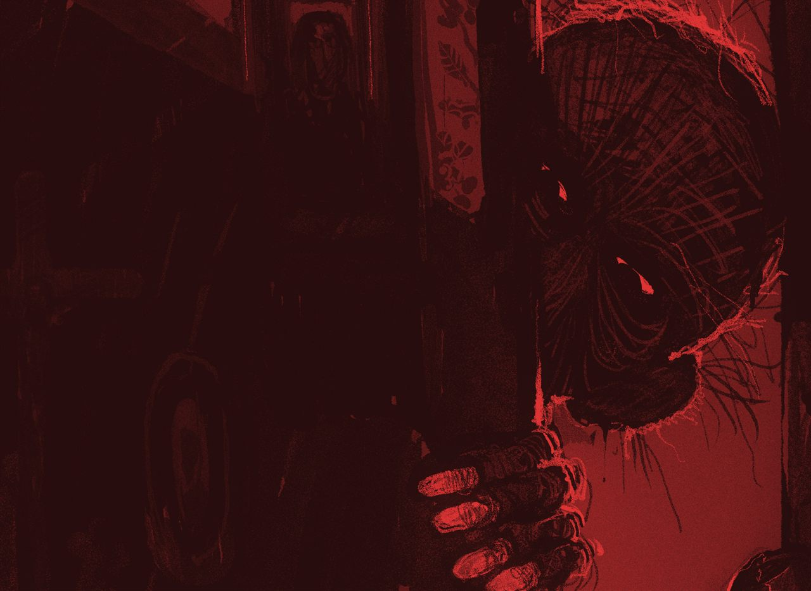
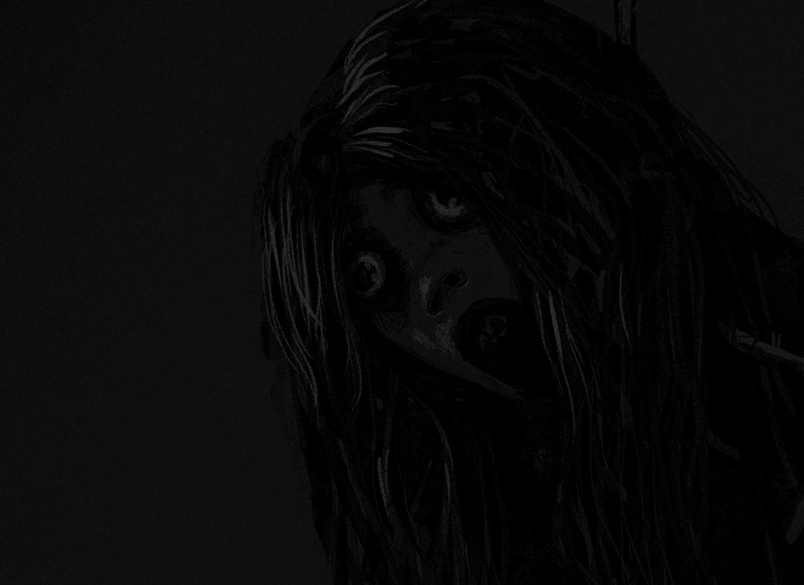
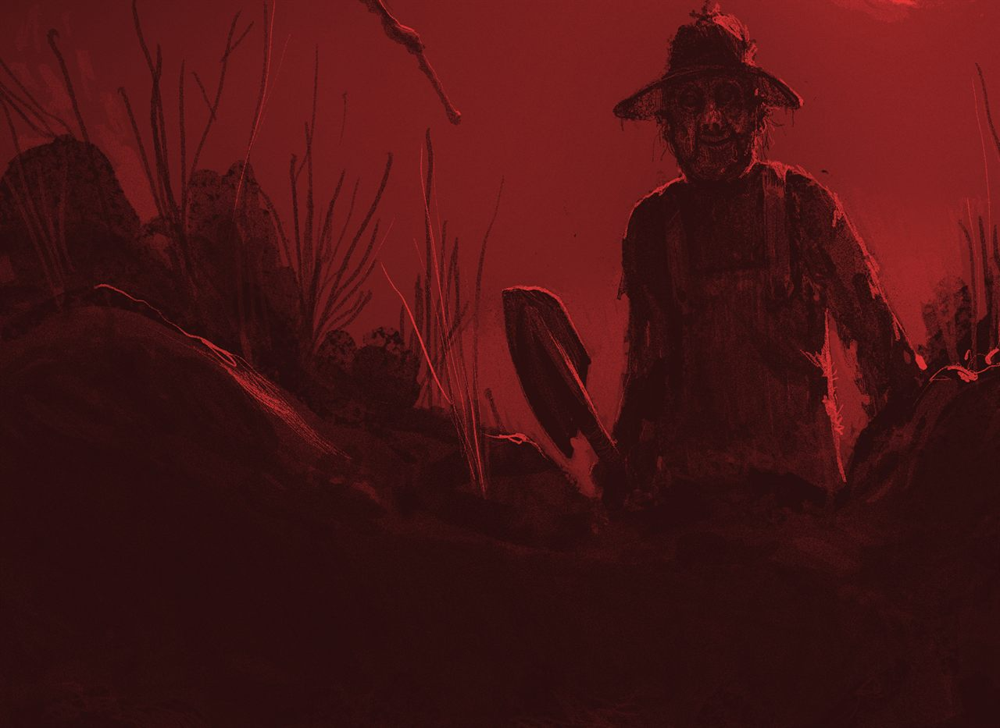
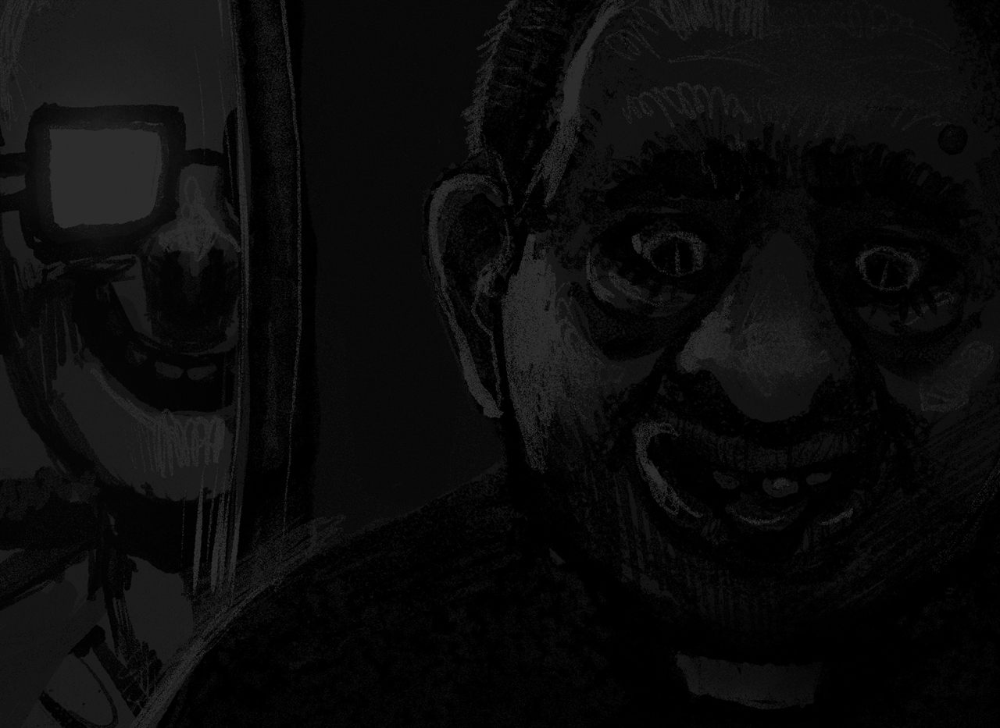
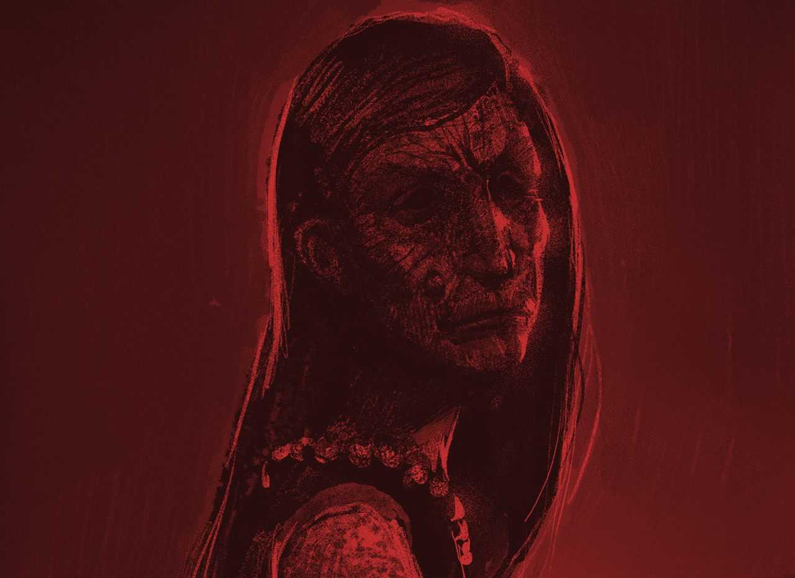
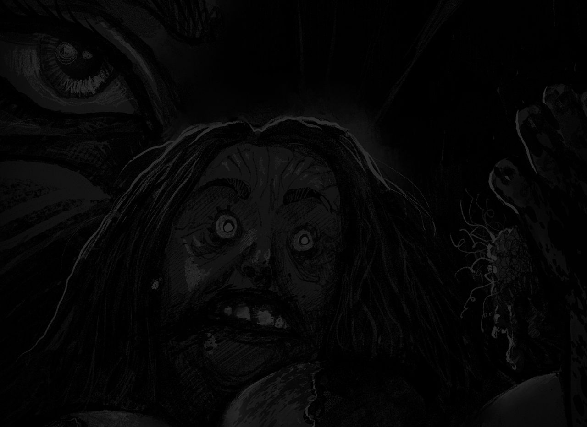

El abuelo tacaño
El abuelo tacaño murió ya hace un año
pero aún cada noche regresa a la casa
y rebusca en cajones, mesitas y frascas.
El abuelo tacaño ansía dinero
pues en vida nos dijo «es lo que yo más quiero».
Se lleva pesetas duros y billetes
y en el cementerio en su nicho los mete.
El abuelo tacaño ya nunca descansa
llenando su tumba de cobre y de plata
de gusanos de moscas y también de ratas.

La comba de María
Tu amiga María
siempre sin alegría
por fin hoy es dichosa
estrena su comba rosa.
María está tan contenta
que nota un nudo en la garganta
es el nudo de su nueva comba
que a sus amigas seguro encanta.
Pero María no salta
ni hace trucos, ni canta
solo se balancea
fría como una nevera.

El Chato
El Chato era enterrador
y murió mientras trabajaba,
solo sepultar sabía,
con vivos ya no trataba.
Desde aquel día de verano
en el pueblo algo pasa,
pues cien mascotas de los vecinos
faltan de sus casas.
Y es que El Chato no ha descansado
de lo único que sabe hacer,
sigue enterrando alimañas
como alimaña era él.
Y en una viña abandonada,
se encontrarán algún día,
los cuerpos de cien mascotas,
enterradas con gran maestría.

Roberto el sacristán
Roberto, tu padre troceado
y tu madre bajo el huerto.
El hijo más querido,
el sacristán perfecto,
despachaste a tus padres
recitando el Padre Nuestro.
Al cura has invitado
a un riquísimo guisado,
de tu padre son las grasas
de tu madre carbohidratos.
Roberto el sacristán,
experto cocinero,
ingredientes y monaguillos
requieren mucho esmero.

Verónica Serrano
Doña Verónica Serrano,
siniestra profesora de piano,
ni sonríe ni se marchita,
su instrumento la necesita.
Hoy en Bilbao
mañana en Albacete,
clases particulares
a los niños promete.
Su gran piano de cola
no es un instrumento corriente,
desafinado y glotón
de los niños no deja ni un diente.
Alimentar a su piano,
es su atroz condena,
Doña Verónica Serrano,
profesora y alma en pena.

Beatriz la «Ojos de gata»
Esta es la triste historia
de Beatriz la «Ojos de gata»,
la degollaron trabajando,
era puta, pobre y barata.
Ella odia a los puteros
y su aliento de cloaca,
cortaría sus pelotas
para usarlas de corbata.
Beatriz se mete en la cabeza
de las esposas de estos cerdos,
y cuando están en plena faena
les arranca los huevos.
Muerta, puta y vengativa,
«La Ojos de gata» nunca olvida
por cada putero agonizante
Beatriz sonríe por un instante.
Las seis ilustraciones
Desliza para recorrer la galería